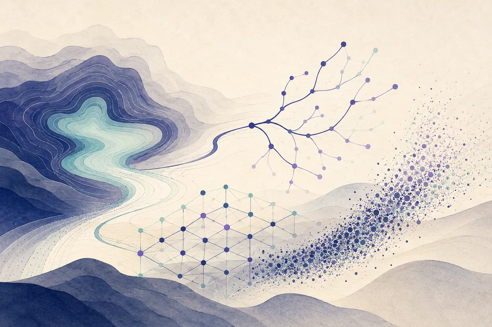

Topic archive
I topic trattati nell’anno accademico 2025/26 sono:
- Topic I: Approximation algorithms
- Topic II: Parameterized algorithms
- Topic III: Beyond worst-case analysis
Seminari tematici

01
I topic trattati nell’anno accademico 2025/26 sono:
02
L’archivio raccoglie le quattro lezioni dedicate a ciascun argomento nelle diverse edizioni del corso. I materiali restano organizzati per topic, indipendentemente dall’anno in cui sono stati presentati.
Topic archive
Topic archive
Topic archive
Topic archive
Topic archive